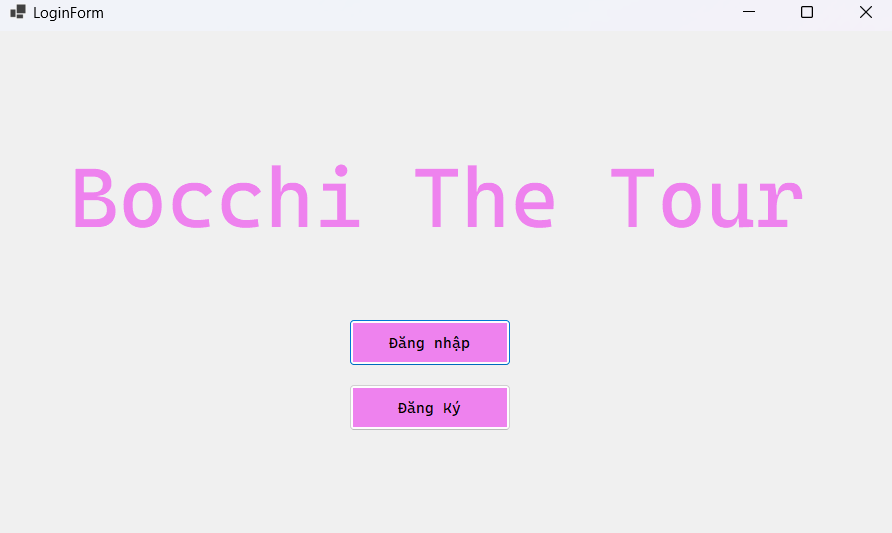

1. Màn hình chính

Hình 1: Giao diện chính khi mở ứng dụng.
Tại đây, người dùng có thể chọn "Đăng nhập" nếu đã có tài khoản, hoặc "Đăng ký" nếu là người dùng mới.
Hình 1: Giao diện chính khi mở ứng dụng.
Tại đây, người dùng có thể chọn "Đăng nhập" nếu đã có tài khoản, hoặc "Đăng ký" nếu là người dùng mới.
Hình 2: Giao diện đăng nhập.
Người dùng cần nhập đúng Email và Mật khẩu đã đăng ký trước đó, sau đó nhấn nút "Đăng nhập" để vào hệ thống.
Hình 3: Giao diện đăng ký tài khoản mới.
Người dùng mới cần điền đầy đủ các thông tin gồm: Họ tên, số điện thoại, mật khẩu (và xác nhận mật khẩu), email và địa chỉ. Nhấn nút "Đăng ký" để hoàn tất.
Hình 4: Giao diện bảng điều khiển quản trị.
Tại bảng điều khiển, quản trị viên có thể truy cập các chức năng chính như: quản lý người dùng, điểm du lịch, vé, tour và các chuyến đi.
Hình 5: Giao diện quản lý người dùng.
Cho phép xem danh sách tài khoản, chỉnh sửa thông tin hoặc xóa người dùng khỏi hệ thống. Có thể lọc theo tên, vai trò hoặc email.
Hình 6: Giao diện quản lý điểm du lịch.
Quản trị viên có thể thêm mới, chỉnh sửa hoặc xóa các điểm tham quan. Mỗi điểm cần có tên, mô tả, địa chỉ và hình ảnh đại diện.
Hình 7: Giao diện quản lý đặt vé của người dùng.
Theo dõi các lượt đặt tour từ người dùng. Quản trị viên có thể xem chi tiết, xác nhận thanh toán hoặc hủy đơn đặt nếu cần.
Hình 8: Giao diện quản lý tour du lịch.
Dùng để tạo và quản lý các gói tour gồm tiêu đề, mô tả, điểm đến, giá vé, số lượng người tham gia và thời gian.
Hình 9: Giao diện quản lý chuyến đi thực tế.
Mỗi chuyến đi là một phiên bản cụ thể của tour. Tại đây, quản trị viên theo dõi lịch trình, thời gian, người tham gia và tình trạng.